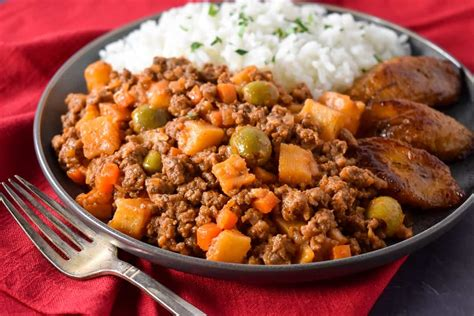

Classic Cuban-style Picadillo

Description
This is a classic Cuban picadillo recipe for ground beef
that is typically eaten over white rice.
It can also be used as a filling for tacos or empanadas.
It's delicious with fried ripe plantains.
Ingredients
- 1 tablespoon olive oil
- 1 small onion
- 1/2 green bell pepper, chopped
- 1 clove garlic, minced or more to taste
- 1 pound lean groun beef
- 1 (8 ounce) can tomato sauce
- 6 large pitted olives, quartered
- 1/2 cup raisins
- 1 tablespoon capers (optional)
- 2 packages of goya seasoning
- 1 tablespoon ground cumin
- 1 tablespoon white sugar
- salt to taste
Directions
- Gather all ingredients
- Heat olive oil in a skillet over medium heat; cook and stir onion, bell pepper, and garlic, onion in the hot oil until softened, 5 to 7 minutes.
- Add ground beef into the skillet; cook and stir until crumbly and completely browned, 7 to 10 minutes.
- Stir tomato sauce, olives, raisins, capers, cumin, sazon seasoning, sugar, and salt into the ground beef mixture. Cover the skillet, reduce heat to low, and cook until the mixture is heated through, 5 to 10 minutes.